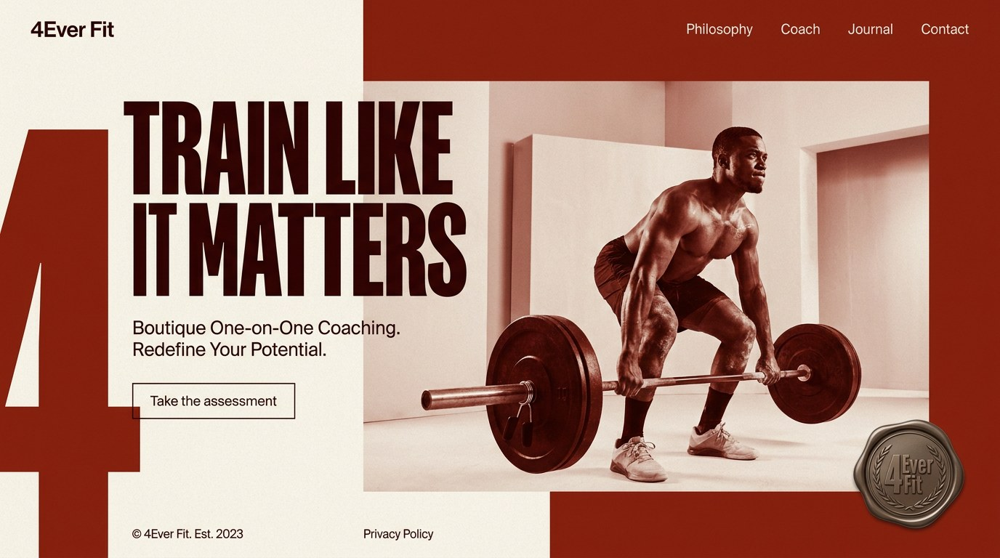
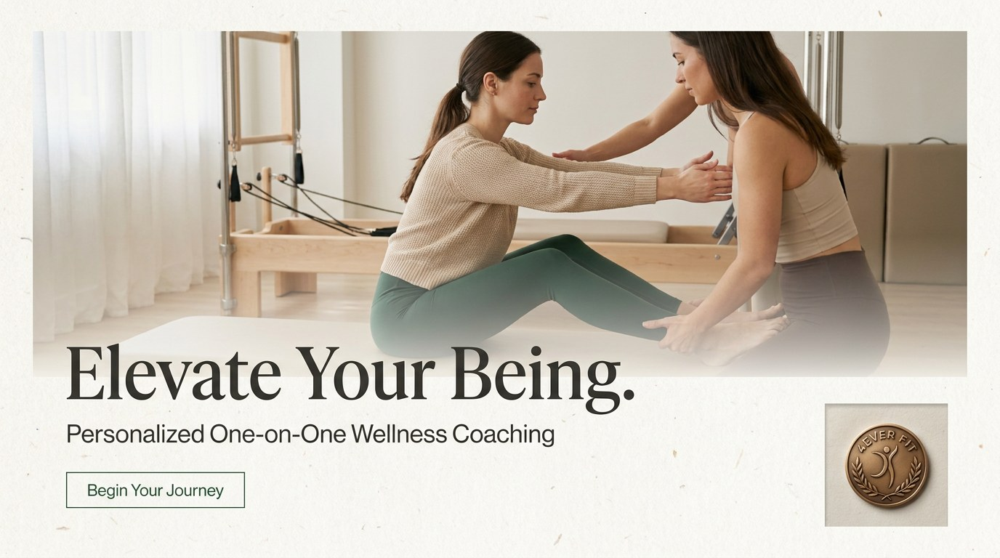
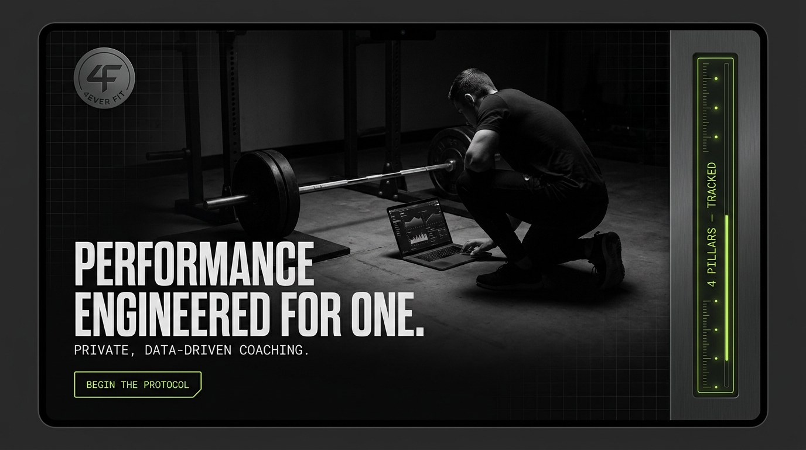

Each varies colour strategy, type pairing, and mood together — not one look recoloured three times. None of them reuse the dark bronze system that got rejected. Pick one, mix elements across them, or ask for another round.
These are mood references, not finished pages. The people in them are AI-generated, which is on the anti-slop banned list — they're here to show light, colour, and composition only. The real build uses either photography of actual clients and the coach, or a purely typographic treatment. Judge the palette, the type, and the structure; ignore the models.
Oxide red against bone, condensed all-caps display, and an oversized "4" bleeding off the left edge as a structural device rather than decoration. Reads like a magazine cover — high energy, unmistakably about training hard. The badge appears as a pressed wax seal, treating the mark as a physical object.

Risk: the loudest option, and loud can read cheap if the photography isn't strong. It also skews masculine — worth checking against who the coaching actually serves.
Off-white ground, high-contrast serif set large, soft natural light, and a lot of air. The most literal reading of "boutique" — it sells attention and care rather than intensity. The badge sits small and framed, like a maker's mark.

Risk: reads spa or wellness studio more than strength coaching. If someone lands here wanting to get strong, this may not look like the place. Also the closest of the three to a generic premium template.
Near-black with a single lime signal colour, condensed caps, and mono subheads. A vertical instrumentation rail runs down the right edge carrying live data. This is the only direction whose look matches the product it funnels into — the site and the app read as the same system.

Risk: dark sites can suppress conversion for older audiences, and lime-on-black is close to a well-worn fitness-tech look. Needs careful contrast work and restraint with the accent to avoid feeling generic.